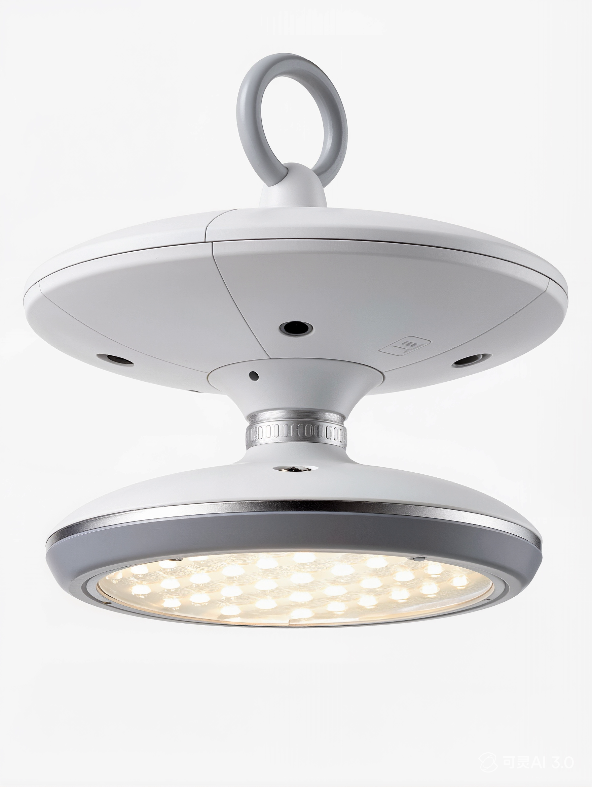

Luz de Emergência UFO Recarregável
Uma luz recarregável de alta potência para apagões: pendura-se de um gancho sem instalação, dimeriza em três modos e três temperaturas de cor, e recarrega por USB-C.

Quando a rede cai, é o produto que ilumina um cômodo inteiro na hora. A cabeça em forma de disco dá iluminação alta e uniforme (classe 150/200W), pendura-se de qualquer gancho sem instalação, e dimeriza em três modos de brilho e três temperaturas de cor. Carrega por USB-C e dura 4–6 horas: o SKU de apagão fácil e de alto impacto para mercados com cortes.
Especificações
| Potência | classe 150 / 200W |
|---|---|
| Dimerização | 3 modos |
| Temperatura de cor | 3000K / 4000K / 6000K |
| Diâmetro | Φ180–220mm |
| Carga | USB-C |
| Autonomia | 4–6 horas |
| Instalação | De pendurar por gancho, sem instalação |
| Certificação | CE + RoHS |
Por que os compradores escolhem
Ilumina um cômodo inteiro. Cabeça de alta potência para iluminação real durante um apagão, não um backup fraco.
Zero instalação. Pendura-se de qualquer gancho: vende para qualquer um, instala em segundos.
Três temperaturas de cor. De quente a frio, comutáveis conforme o cômodo.
Certificado e pronto para OEM. CE + RoHS com cada cotação; embalagem e marca disponíveis.